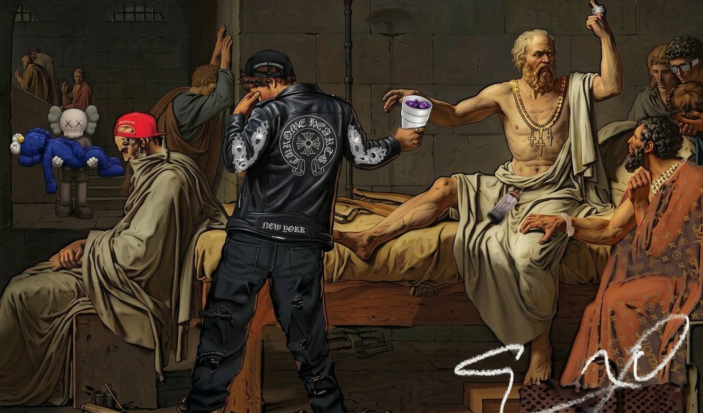

The Aesthetic of Digital Ruins

How forgotten digital archives shape our understanding of cultural memory and preservation in the modern age.
Read Article →Essays and observations on lost media, culture, and digital archaeology

How forgotten digital archives shape our understanding of cultural memory and preservation in the modern age.
Read Article →Exploring the resurgence of analog media and its role in underground culture and nostalgic preservation.
Read Article →Independent filmmakers are rediscovering lost techniques and creating new works inspired by the archives.
Read Article →